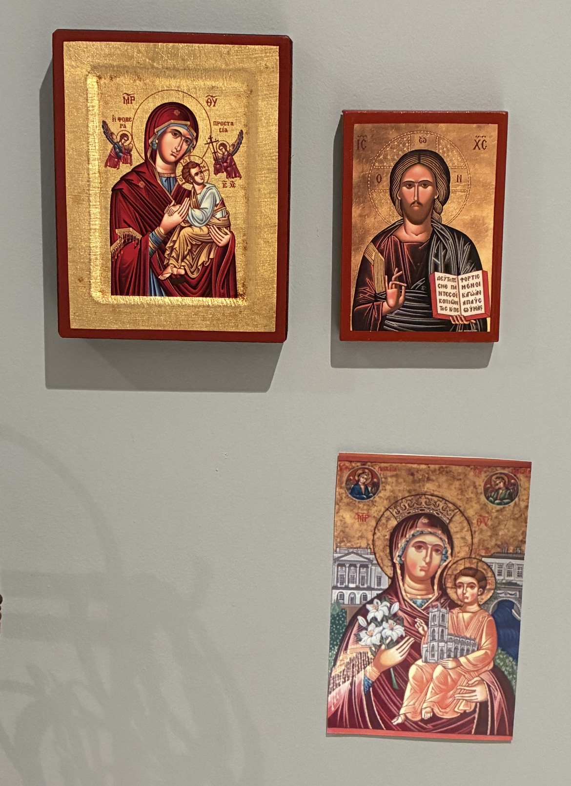

“The whole earth is a living icon of the face of God.” - St John of Damascus
A common critique among low-church protestants to High-Church Anglicans, Lutherans, Catholic and Orthodox is the use and veneration of religious artworks or icons. Commonly Exodus 20:4 is cited and used as the main argument. On the surface the use of icons can seem contrary to this verse. However, upon proper study of historical reasoning and theology. We can see that icon veneration is indeed Biblical and a great aid to worship and liturgy.
My main source for this essay alongside Scripture is St John of Damascus’s Three Treatises on the Divine Images. Written in the 8th Century AD, this work was published during the turmoil of Iconoclasm. The movement aimed to remove icons and imagery from liturgy as well as in private devotions. This movement had backing from many leaders at the time such as Leo III who issued edicts banning the use of icons.1 The Council of Hieria in 754 AD condemned the veneration of icons.2 Thankfully, the movement was put to a halt in 787 AD with the Second Council of Nicaea. The Council of Hieria was deemed invalid due to it not being ecumenical as none of the five great patriarchates (Rome, Constantinople, Jerusalem, Alexandria and Antioch) were present.3 Damascus’s work helped play a key part in the iconophile’s defence.
The first argument to be refuted is that creating images is not allowed as it is impossible to depict the invisible God. “His voice you have never heard, his form you have never seen.’ 4 And this is true initially, throughout the Old Testament we did not see the form of God. However as we know from the Johannine prologue ‘the Word became flesh and dwelt among us.’5 The Incarnation is affirmed amongst all forms of Nicene Christianity. And icons help proclaim this fact. Christ became matter, fully human and fully divine. And therefore we can depict Christ in a physical matter through icons. The use of icons helps in our devotions to the gift of God coming to dwell among his people. Damascus says it as ‘you may depict the likeness of something seen.’6
The next point of contention is the act of using icons in aid as worship. And Church history backs up the use of icon veneration with the clear distinction between latria (λατρεία) and proskynesis (προσκύνησις). Latria is worship reserved for God alone, latria to anyone else would be idolatrous. On the other hand, proskynesis is veneration and honour in a more general sense. That can be directed to holy people such as the saints when we ask for their intercession. Damascus makes these points in the fourteenth section of his first treatise. Latria: ‘which we offer to God, alone by nature worthy of veneration.’7 And proskynesis: ‘Then there is the veneration offered, on account of God, who is naturally venerated, to his friends and servants, as Jesus the son of Nave [Joshua, the son of Nun] and Daniel venerated the angel’.7 We must focus on the use of the phrase ‘on account of God’, as this shows that even proskynesis, not direct latria is still channel and focuses us towards God when we ask for His saints intercession. Damascus looks back to scripture where we can see people venerating objects as well as places. ‘Let us go into His dwelling place, let us worship at His footstool’.8 Or in Genesis where Joseph’s brothers came and bowed before him. Giving honour to someone, especially someone holy. Is not on the same level as worship which we give to God. It is a sign of respect.
A useful analogy to apply to icons is that icons serve as mirrors. We use icons as aids to worship as they are mirrors that reflect the divine light, as well as reflecting back to ourselves our own state. As St Paul puts it: ‘ For now we see in a mirror dimly, but then face to face.’9 Icons are used as the channel to point us towards God. Damascus refers back to Basil the Great and his writing where he says ‘ because the honour paid to the image passes on to the prototype.’10 And this is very important when thinking of the context in the time of the Byzantine Empire. People were not as literate as we are today. So icons served as books to the illiterate allowing them to picture in their minds Christ, his mother and Gospel stories. Damascus is keen to point this out. ‘What the book does for those who understand letters, the image does to the illiterate … For images were set up as memorials, and were honoured not not as gods, but as leading to a recollection of divine activities.’11 We must remember that there was a time in Christian history where the masses did not have access to the Bible. Therefore artwork could be used to help focus their minds in prayer.
Furthermore, icons do not violate the Second Commandment. When we read in the book of Exodus we see God commanding the making of cherubim for the Ark of the Covenant. ‘and you shall make two cherubim of gold; of hammered work shall you make them, on the two ends of the mercy seat.’12 God does not ban all imagery, he permits it on the Ark for example, as well as 1 Kings 6 where cherubim are put in the temple. By continuing to use religious imagery we preserve the teachings and traditions of the early Church. The earliest icons and religious imagery began to appear in the 3rd century AD possibly earlier. Roman catacomb frescos were made in the early years of Christianity13. Let us preserve this great tradition.
To conclude, icons affirm the goodness of creation, ‘I do not venerate matter, I venerate the fashioner of matter’.14 We can rejoice in God’s creation by using created matter as a channel to give praise to God. If we begin to hate matter we can fall into the heresy of Manichaeism. Christ sanctified matter by being incarnated as a human. Therefore let us use them as an aid to our liturgy, and remember the Incarnation.
References
Treadgold, Warren, 1997. A History of the Byzantine State and Society. Stanford University Press. pp. 350, 352–353.
Fordham University Medieval Sourcebook: Iconoclastic Council, 754. Available at: https://sourcebooks.fordham.edu/source/icono-cncl754.asp. Accessed: 19/11/2026.
Auzépy, Marie-France (2008). "State of emergency (700–850)". In Shepard, Jonathan (ed.). The Cambridge history of the Byzantine Empire (c. 500–1492). Cambridge University Press. pp. 284.
John 5:37 ESV.
John 1:14 ESV.
John of Damascus, 2003. Three Treatises on the Divine Images. Translated by Andrew Louth. St Vladimir's Seminary Press. pp. 25. Section 1.8.
John of Damascus 2003. pp.27. Section 1.14.
Psalm 132:7 ESV.
1 Corinthians 13:12 ESV
Basil the Great, 1895.On the Holy Spirit. Translated by Blomfield Jackson in Nicene and Post-Nicene Fathers, Second Series, Vol. 8, edited by Philip Schaff and Henry Wace pp.32 .Section 18.45
John of Damascus 2003. pp.31. Section 1.17.
Exodus 25:18-22 ESV.
Katherine Sanders Icons. The History of Orthodox Christian Iconography. Available at: https://katherinesandersicons.com/blog/history-of-christian-iconography-in-pictures. Accessed: 20/11/2026
John of Damascus 2003. pp.29. Section 1.16
